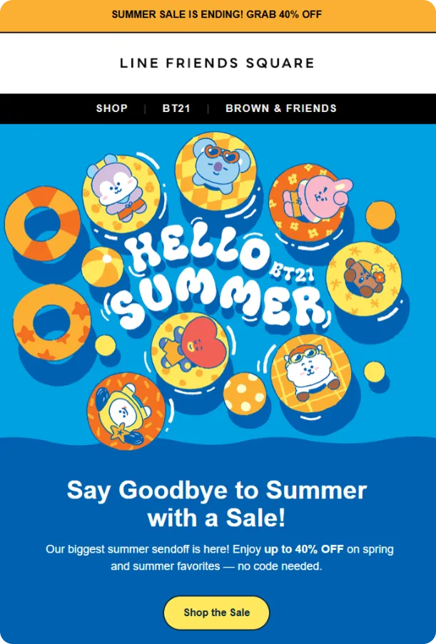
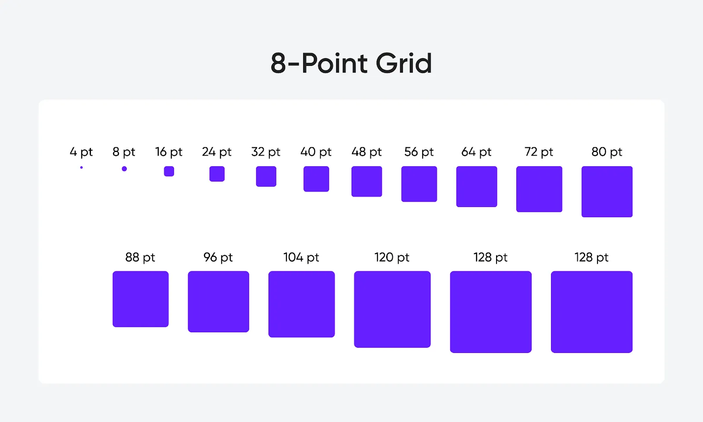

How do you turn email design from guesswork into a repeatable system?
In this episode of Feedback Friday, Matt Helbig talks with George Pettigrew of Inbox Army to explore how treating email as UI design can transform workflow and quality. They break down how spacing scales, typography choices, design systems, and accessibility thinking help teams build emails that feel consistent, thoughtful, and easy to maintain. It is a practical look at how a structured approach can make email creation smoother for designers and developers alike.
TL;DR
- Why email benefits from a UI design mindset
- How Figma systems keep production consistent and scalable
- Using spacing scales, type systems, and accessibility to remove guesswork
- What UX thinking adds to dark mode, mobile, and user-first decisions
Matt Helbig: What's up, email geeks? Welcome back to another episode of Feedback Friday. This week, we're chatting with George from Inbox Army. He and his team build some of the most dialed-in email design systems I've seen. We're discussing Figma, accessibility, workflows, and more. There are many valuable takeaways on this one. Let's jump in.
George Pettigrew: For those who don't know, my name is George Pettigrew. I'm a Creative Director at Inbox Army. Inbox Army is a full-service email marketing agency. I collaborate with developers, designers, copywriters, strategists, and other professionals to create effective solutions. I'm deep in the weeds and, yeah, just Creative Director. I oversee all aspects of creative direction. I've been in the design field for approximately 20 years. I've been in email design for roughly 12 years. I really cut my teeth in email design at my previous job. It was called SmileDirectClub. I was hired there as an entry-level production email designer. I didn't know anything about email design, and the only thing I knew about it was that I would give my designs to a developer, who would code them, and then they would look like crap. I knew very early on that there was a significant disconnect between design and development. That's how I ended up where I'm at now. I learned how to code emails. I learned how to code websites. I wanted to have that technical understanding of how everything works behind the scenes.
I believe the pivotal moment in my career was Litmus 2019. I tell everybody this because without it, I wouldn't be here. Matt, I'm not sure if you've heard of Crystal Ledesma, but she's Zillow's lead engineer. I believe she gave a talk at Litmus in 2019 in San Francisco, focusing on design systems. That talk completely changed my life. I'm all about design systems. I'm all about Figma. I'm all about pixel perfection. I'll stop there. We'll get into it.
Matt Helbig: Perfect. Thanks for that background. So this first brand we're going to look at today is Line Friends. Diving into their emails, it's really impressive to see how you've set up the overall brand structure, what you're able to do in Figma, while still utilizing live text and adhering to accessibility best practices. I'd be happy to walk you through the process of setting up an email within Figma.

George Pettigrew: For one, I tell everybody that email is a form of UI design. So I start there. Think of an email design like a website or an app. Brands share certain elements, such as fonts, colors, and other visual aspects. Is it accessible? How do you make it accessible?
Everything starts with a style guide. You pull in that information from the client. You can visit their website, reverse-engineer it, or they will usually provide you with a style guide. Then I'll incorporate that information into a design system in Figma. That's what my team and I do, and then we are able to build email designs that are on brand every single time. The reason is that we're using the same fonts, the same UI elements, and similar elements. The name of the game is consistency. You want everything to look and feel like it's coming from your brand.
That's where design systems come into play. And yes, it all starts with UI elements, such as fonts, colors, buttons, and similar visual components. Every section of an email is a module, and the designers will take those modules, which are modular, meaning you can modify them. You can change things like image placement; for example, this hero has an image at the top. There's a different version that features an image at the bottom. They'll take the design system and framework, and orient them as needed. They'll then plug in all the necessary assets, and depending on the assets they have to use, that determines how we theme or design the email.
To elaborate a little on that, for instance, with this email, the top part of the email is the actual image, and the text is below. We wanted to give that full-image effect. So we took the bottom color of the image and bled it throughout the bottom of the email, actually, throughout the entire email. This is the actual image, and then this is the actual code. This is the image; everything else is controlled by code. What I do is think in systems, so everything I do is a system. For instance, when I space elements, I use what's called an eight-point soft spatial sizing system. This is industry best practice for countless reasons. That's where you space things in increments of eight.
When I use type, I create type in systems. For instance, with headlines, I'll have H1 through H6, and in my body font sizes, I'll have body large, body medium, body small, and body extra small. Everything's a system. I start with the core elements that everything uses: text elements, spatial sizing systems, and grid systems. That's my framework. Once I have standardized the base elements in different subsystems, I combine them into a design system.
Matt Helbig: So I guess: why is that important? Why can't I simply lay out the information and export it?
George Pettigrew: The individual parts must work together to form a cohesive whole. There are so many reasons. Everything is connected. What's important to me with design is mitigating subjectivity. Throughout my career, I dealt with condescending creative directors and leaders. I've had some good leaders; I'm not generalizing all of them, but the majority of people I dealt with didn't know anything about email design or UI design. They just knew what they wanted. They didn't consider the user experience, which would frustrate me because everything they wanted was subjective.
To me, using things like grids and the eight-point soft spatial sizing system brings a basic mathematical approach into design that helps you be more objective. For me, it's about being more objective and not being subjective all the time. You want to be subjective sometimes, but knowing when to be subjective versus when to be objective is really important. The objectivity that systems and design systems bring to the table is undeniable. It's a no-brainer.
Matt Helbig: I do feel that there are helpful resources when you start diving into why specific rules exist around typography, as they enhance legibility, or why elements are spaced a certain way, because they relate to each other in design. It's interesting to see an email in the wild and understand where it's breaking the rules or following them. It also helps inform your own design.
George Pettigrew: And Matt, I can show you real quick for those who don't know what an eight-point soft spatial sizing system is. It's where you space elements in increments of eight. For instance, I have a button with dimensions of 16 pixels top and bottom, and 32 pixels left and right. The width of the button is relative to the text it contains. If I change the text, the width of the button changes, but the padding inside the button doesn't change. That's fixed. Understanding the difference between what's fixed and what's dynamic can help you understand how to code for specific situations.
If you look at the space below the headline, it's 32 pixels, a multiple of 8: 8, 16, 24, 32. The space between the headline and the paragraph is 16. Space to the left is 64. Space below is 48. I'm repeating the same spatial sizes every time. When you repeat patterns over and over, the eight-point soft spatial sizing system becomes the mathematical connective tissue that holds everything together. For type systems, this is a chart and a formula I devised. I have a formula I use to determine font size. For H1, H2, H3, and H4, this is the formula I use as a starting point. Sixteen is my base unit of measurement. A lot is based on 16. When you come up with a font size, that's cool, but how do you find the line height? For headlines, it's best practice to multiply the font size by 110%. That's where I start. I multiply the font size by 110%. Then you need to consider the x-height of the font. Every font has a different x-height. If I have two fonts at 40 pixels and one has a smaller x-height, the one with the smaller x-height will look smaller even at 40 pixels. Understanding the basics of x-height and typography helps you know that if the line height is too tight, I'll scale up to 120%, 125%, or 130%. Whenever I find the sweet spot, that line height becomes the variable I use to adjust. If it's 110%, I use 110% for all headline sizes, so there's a mathematical tie that connects them.
When developing type systems, it's challenging because a wealth of information is available.
People recommend using a one-ninth harmonious scale or other systems. What I found is that in email, you don't have much space, so you have to reduce the size. I try to use math as much as possible. For instance, if 40 pixels is my H1 and I'm doing 16 times 2.5 to find that, I start subjectively: with this font, how big can I make it? If it's 44 pixels, I start there. Then I take 44 and divide it by 16. But in this case, I have 40, so I say: okay, I came up with 40 subjectively, so now let me divide that by 16. Now I know that 16 times 2.5 is the formula that is used. If I were to come up with that through that formula, that's how I would do it. So, then I take that formula and think, 'Okay, if 2.5 is my multiple, or the number that I'm multiplying everything by, then I go down.' So I'm like, okay, what about 16 times 2.25? And then I create a scale. I keep going down. As you can see, I'm decreasing in 0.25 increments. So 2.5, 2.25, 2, 1.75. You'll see here I skipped, and this is where you create a system but then break it when you need to, because as fonts get smaller, sometimes you have to deviate. You have to change things. I might even have to change the line height because optically it looks too tight at that small size or something. You have to test a lot of this stuff, but I try to keep it as simple as possible, and I always start with these frameworks.
To your question about line height for headline versus body copy, you have to think about the nature of each. With headlines, they're going to be big, and you're not going to have many lines. You'll have three lines at most. But with paragraph copy, where the copy is way more dense, then you want to multiply by 1.5. So you raise the multiple. And 1.5 is the same thing as 150%. I just put 1.5 here, but it's equivalent to 150%. What's interesting about this is that it's best practice. For body font sizes, always multiply by 150% or 1.5, and then review the result. You need to consider the x-height. If it's too tight, then adjust it to 1.6, 1.55, or 1.7, as desired. However, use the same font for all, ensuring continuity in the spatial relationship between the font sizes. Does that make sense?
Matt Helbig: It is a lot of math, but as you said, taking the guesswork out makes things easier. Once you set it, there's no need to worry about how large this H1 will be, because we've already done the math. They set what it's going to be.
George Pettigrew: Then every hero section starts with an H1. Every section starts with an H2. And if a headline is nested in a body section, it starts with H3. Sometimes you do have to break the sizes because it's not an ideal world every time. Copy will determine that a lot of the time. But that's the logic. You go up and down, create these systems, and use those systems.
Matt Helbig: How do you build out these components? How do you decide which is important? How do you translate from desktop to mobile?
George Pettigrew: I build everything based on the user. Before I begin writing an email, I consider the various users who will interact with the email I'm composing. I think of the client, relevant stakeholders, project managers, strategists, copywriters, designers, and developers. But the most important user is the customer receiving it. Figma is not the end result of your product. If you're building a UI product, which is what an email is, it’s not going to look exactly like what you QA in Figma. I start by understanding the different users. Then you also need to consider accessibility. You have people who use screen readers, those who prefer dark mode, and individuals who use cell phones. Once I've segmented all my different users, I consider the user experience for each one. Joe Natoli is his name, I believe. There's a course on Udemy called User Experience Design Fundamentals, which I highly recommend to everyone. It teaches you how to build for your users.
With email, you have to understand the basics because it is a relatively archaic technology. It hasn’t evolved much since 1999. I start by identifying my users and designing with them in mind. I see this email as it is, but what will it look like in dark mode? I ask myself questions like: What will this email be like for someone using a screen reader? For someone who’s colorblind? I constantly think about all the different users, because as a brand, you won't know who the user is. The more accessible you make your designs, the higher your chances of engagement and brand awareness. You position yourself in a special place in people’s minds. When I interact with a product that is accessible or user-friendly, it shows me that whoever created it knew what they were doing. That's a big part of how I approach the design. To answer your question about going from desktop to mobile, I think about the user experience. What is it like for an email to be on a desktop versus a mobile? Many people say you need to design mobile-first, and I like that approach, but you still need to account for desktop users. You need to think about the experience for both platforms. The primary difference lies in how people interact with these elements. On a desktop, you're scrolling with a mouse. On mobile, you're scrolling with your thumb.
For instance, look at these buttons. This is the desktop button. The button hugs the text. But on mobile, the button spans the full width of the viewport. The reason is that people are scrolling with their thumb, and you don’t know if they're left-handed or right-handed, but you want it to be effortless and easy to click that button. You don’t want them to stretch their thumb over the screen. You want to keep it simple, and in my opinion, the best practice is to have the button span the full width of the viewport.
Mat Helbig: How do you onboard someone onto a design system like this? Do you have to walk them through it? Do you present this to clients? How does this work for you?
George Pettigrew: We present it to clients. Anyone who starts, I take a week to go through all of this: not just designing systems, but also identifying and understanding the different users, understanding the user experience, learning best practices for touch targets, and why you shouldn’t embed prominent elements into an image. Education is key. I educate everyone, from designers and developers to strategists, copywriters, and clients. It is very challenging to convince an image-based client to switch to a text-based approach, but every time we present this system to the client, they're completely on board because they understand the trade-offs between image-based and text-based solutions. They understand everything from dark mode to responsiveness.
Design is very abstract, but an email is not. It’s like a website. There’s a framework you use. So we explain the fundamentals of UXD when it comes to email, whether that's interacting on a phone, in dark mode, or on a desktop. We explain everything, and by the end of the call, they're blown away because they had no idea what they were getting into. Nobody explains this stuff. It’s ambiguous, and nobody wants to share information, which is ridiculous. We should share this information openly because people need to understand the fundamentals of user experience.
I tell clients all the time: most people are going to view your email out in the wild. They won't be connected to Wi-Fi. They’re going to have slow connections. If you have a full image-based email, it will take time to load, and nobody will wait. They'll click off before they even see anything. You've already lost the click-through at the moment of inception. By simply following best practices, you mitigate that. Something that simple increases your odds of increasing conversions and brand awareness.
Matt Helbig: I suppose you did mention dark mode, and I'm curious: is that something you design within Figma, or is it something you troubleshoot with each HTML file? How does it work for your team?
George Pettigrew: Yeah. We test everything in email on Litmus to check how it looks. This is what I say about dark mode. In email design for dark mode, you want to understand the fundamentals, but, in my opinion, the benefits are not worth the effort, and I'll explain that in a second. When designing for dark mode, it's essential to note that any dark color controlled by HTML will convert or invert to a lighter color. You have different email clients that render emails differently in dark mode. A lot of them you cannot control. There are some clients where I could say, “Hey, I want to create a dark mode equivalent for this color,” and if you are doing a website and you have full creative control over how your site is going to look in dark mode, then in my opinion, the juice is worth the squeeze. You can take your colors, create a dark mode equivalent, and then use those. However, in email, the juice is just not worth the squeeze. Because if I say, “Hey, I want the email to look like this in light mode, but then like this in dark mode,” most email clients will ignore that.
My rule of thumb is to use lighter colors in light mode. In dark mode, they will automatically convert to darker colors. You do have some brands that use dark themes in light mode. I always tell them, “This email is going to look like a light theme in dark mode because your entire email is dark,” if it is not image-based. That is something to think about. People often struggle to design for dark mode, and I've read a book that everyone should have. It is called Refactoring UI by the creators of Tailwind CSS. They show how to create these color scales. One problem I often encounter is that I meet with a client who has brand colors, but those colors do not inform me on how to design for accessibility. They are just the brand colors. And to be honest, most creative directors or most creatives on the brand side do not even think about accessibility, so they do not create solutions for it. The best solution, in my opinion, came from that book. They teach you how to take a primary color and create lighter and darker shades of that color. When designing in light mode, you use the lighter end of the spectrum. In dark mode, if you are designing for dark mode, you use the lighter end of the spectrum, because ideally, the backgrounds in dark mode are going to be dark or black. You need light colors to make it accessible. If you put dark colors on top of a dark background, it won't work. And vice versa in light mode: the backgrounds will be light, so you want to use darker colors on top of those light backgrounds to make them more accessible.
Matt Helbig: That makes sense. That makes sense. Alright, so here are the actual coded emails pulled up, and I just wanted to highlight the really great use of live text in different places. It is really interesting to see how this content is laid out and, like you said, how it stacks on mobile, really thinking about those two different experiences. To me, it shows that people are actually thinking about these emails and looking, and as you said, everything honestly just feels really well-integrated into this system. It feels like there's enough space for everything. There is nothing that feels off.
George Pettigrew: You will notice the hero image is a PNG. Technically, the background that appears below the image at the bottom is not part of the image. It is a PNG. It is cut out. We do this sometimes. It just depends on the overall email weight. I prefer not to use PNGs because they are almost always twice the size of JPEGs. But at the same time, if we can get away with it, we will do it. And you are seeing this as such, but some clients will take the darker blue color that we had behind it and completely convert it to a lighter blue or lighter orange color. Those are the kinds of things that you cannot control.
Matt Helbig: I think it looks really good as a baseline. This is only one version of dark mode, but for the most part, I do feel like it is very mindful. Many sections still work really well, and I think leaning into live text also helps some of the content to work particularly well. Little tricks, as you said, such as using a PNG, help ensure that if the image is going to invert or change colors, there won't be a drastic change, making the email look good in both dark and light modes.
George Pettigrew: Yeah, just making sure it is accessible in light mode. That blue color did not change in dark mode here, but it will change in dark mode in the one where the text turned white. Anyway, I just want to confirm that your design is accessible in light mode. If it is accessible in light mode, it will also be accessible in dark mode. That is the thing to keep in mind. And then just understanding what accessibility means. There are different types of accessibility, but the two main things are contrast and font size. Is there enough contrast between your font and the background? The easiest way to determine this is to use the WCAG accessibility tool and ensure that you have a contrast ratio of 4.5:1. You take the foreground color and the background color, enter them into the tool, and it will tell you. The other thing is the font size. I have heard mixed reviews, such as “It has to be 12 pixels and up to be accessible” or “It has to be 14 pixels and up to be accessible.” Our baseline font size is 14 pixels. Any disclaimer copy or similar content you see in one of our emails will be 14 pixels in size, and then the sizes increase from there. That is smaller than our paragraph copy.
As you consider it, there is a design construct, particularly in email, known as the hierarchical pyramid. We will take a look at the footer for a second, as it does a good job of displaying that. In email design, one key principle is that people scan. Two, with the hierarchical pyramid, a user can only process one thing at a time. One of my techniques that is highly effective in email, and which many people use without knowing why, is designing so that important information is visually advanced into the foreground and less important information is visually receded into the background. For example, in the footer, the copyright information, featuring the 2025 Line Friends line, is displayed in white text. Below that, we are using a light gray. Because white has more contrast than light gray, the white visually advances into the foreground, and the light gray visually recedes into the background. They are both still accessible. They both meet that 4.5 to 1 contrast ratio. However, thinking in terms of elevation is a very effective tool that you can use in email, as people tend to scan emails. You want to design your content so they see the important elements and scan right over the others, and you want that to be as seamless and frictionless as possible. One way to achieve this is through the use of color and contrast.
Matt Helbig: Yeah, really smart. I feel like some brands honestly would just make this all white. Or, some brands even make the unsubscribe option down here just black on black, so you might miss it. I have seen that. But this is really smart. It feels really cohesive. As you said, every section, why it stands out, and why you might push something to the background, makes sense, rather than just “I am going to make this all gray because it is the footer and no one is going to see it.” For those who scroll down, the information hierarchy, with separate colors, stand-out elements, or different formatting, and even adding space between sections, makes things easier to scan and more coherent as a design set.
George Pettigrew: Yeah. But it is the same logic throughout.
Matt Helbig: I feel like you are one of the first people I have talked to who thinks of themselves more like a UX designer than an email designer. People often focus on the visual side, copywriting, and other aspects, but building these systems and explaining things effectively is really interesting. Do you feel like you are more of an email designer? Would you say you are more like software? Where would you say your title is?
George Pettigrew: I sit in the middle, and this is what I encourage every creative to do: sit in the middle, be that fulcrum between design and development. My goal, I used to tell people all the time, is to have an inch-deep, mile-wide understanding of how it all works so that if a developer tells me, “That is not possible,” I could do it for them and bring my solutions to life. I definitely sit in the middle, and I encourage any designer and anyone in UI: you have to sit in the middle. You have to be able to think like a designer and also like an engineer. They are complete polar opposites of the brain. You have a left side and a right side. Being able to do both, in my opinion, really makes you, I will not say indispensable, but it makes you highly sought after in this industry.
Matt Helbig: Awesome. Thank you so much for taking the time today to review some of these emails. I learned a lot, and I am excited to dive into Figma, learn more about these design systems, and hopefully create some visually appealing emails. Have a good one.
George Pettigrew: Alright. Thank you for having me.